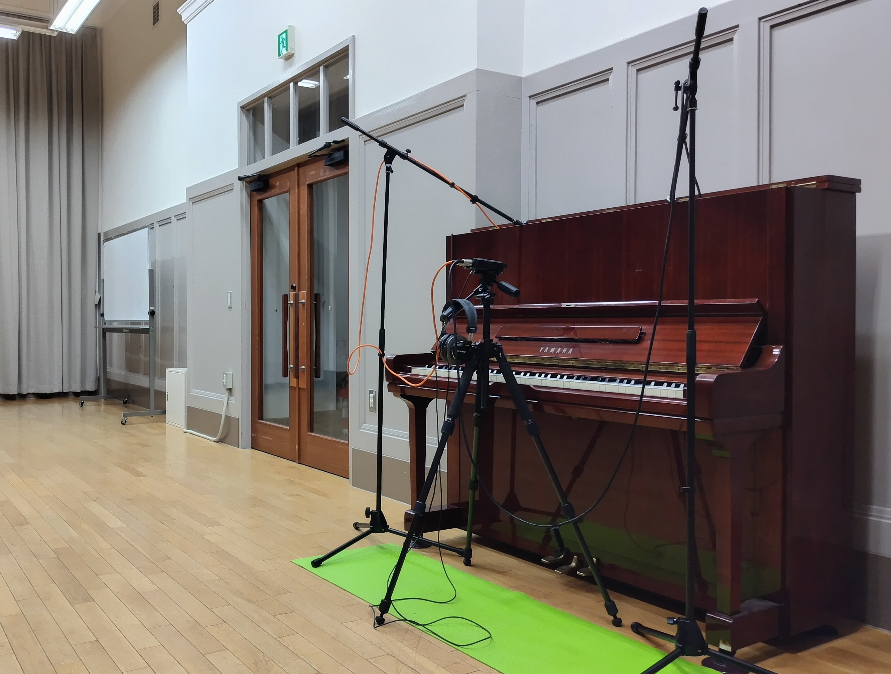

soundfont「kamoepiano301」
「kamoepiano301（カモエピアノ301）」は、浜松市鴨江アートセンターの制作場所提供事業「2025年度【前期】アーティスト・イン・レジデンス」の活動の中で制作されたソフトウェア音源（SFZフォーマットのサウンドフォント）です。本作は、成果発表展「記号になる音楽」で展示された作品の一つです。
制作にあたり、同センターに設置されているアップライトピアノをサンプリングし、ソフトウェア上で再構築しました。ベースとなるピアノの個性を活かしつつ、より繊細な強弱コントロールを重視し、リアルタイムに演奏表現することにこだわった楽器として設計しました。
また、既存の慣習や「リアリティの追求」にとらわれることなく、自分自身が心から「欲しい」と思える響きを追求しました。そのため、メカニカルなノイズなど、演奏表現の妨げになりかねない要素を過剰に付加することはせず、弾き手が表現に集中できる「楽器」としての姿を追い求めました。
この音源がインターネットを通じて世界中へ広がり、鴨江のピアノの響きが場所や国境を越え、多様な表現と出会いながら新しい音楽を生み出していくことを願います。
デモ演奏
ソフトウェア仕様
基本仕様
- フォーマット：SFZ (Plogue sforzando 推奨)
- サンプルデータ：48kHz / 24bit
- データサイズ：約210MB
- ベロシティ・レイヤー：3段階
- 音色制御：ベロシティに応じたダイナミック・フィルターによる補完処理
特徴
- ベロシティ・レイヤーは3段階ですが、レイヤー間の境目が自然につながるようフィルター処理を施しています。いたずらにサンプル数を増やすことなく、フィルターによる動的な音色変化を組み合わせることで、段差を感じさせない滑らかな音の変化を実現しています。
- 一般にアップライトピアノはタッチによる変化が少ないとされますが、その特性にとらわれることなく、より豊かな演奏表現が可能となるよう、弱打から強打までタッチに応じて幅広く音量・音色を変化させています。
- メカニカルノイズ等はあえて付加していません。「リアリティの再現」以上に、弾き手が表現に集中できる“演奏するための楽器”としての在り方を優先しました。
- 必要以上に音を整えすぎて平坦な響きにならないよう配慮しました。鴨江アートセンターにあるアップライトピアノ本来の個性を損なわないよう、録音後の加工は最小限にとどめています。
動作環境
- 推奨プレイヤー：Plogue sforzando
- 対応形式：VST, AU, AAX, Standalone（sforzando経由）
ダウンロード
使用上の注意・ライセンス
- クリエイティブ・コモンズ 表示 継承 4.0の元に提供されています。
- 個人・商用を問わず自由にご利用いただけます。
- クレジット表記は「kamoepiano301 / washiyamagiken / CC BY-SA 4.0」と記載してください。
- 改変・翻案して公開する際には「kamoepiano301」と同じライセンスで公開する必要があります。
- 免責事項：本音源の使用によって生じた直接的・間接的な損害について、制作者は一切の責任を負いません。ご自身の責任においてご利用ください。
インストール・使用方法
- プレイヤーの準備
本音源はSFZ規格のプレイヤーで動作します。あらかじめ Plogue sforzando をインストールしてください。Plogue公式サイト：https://www.plogue.com/products/sforzando.html
- 音源の読み込み
ダウンロードしたZIPファイルを解凍し、中にある 「kamoepiano301.sfz」 ファイルを、立ち上げた sforzando の画面上にドラッグ＆ドロップしてください。自動的にサンプルの読み込みが開始されます。
- ファイルの配置について
解凍したフォルダ内のファイル構成（.sfzファイルと、波形データが入ったフォルダ）は変更しないでください。
- 演奏設定
お使いのMIDIキーボードを接続し、DAW上またはスタンドアロン版のsforzandoで演奏をお楽しみください。